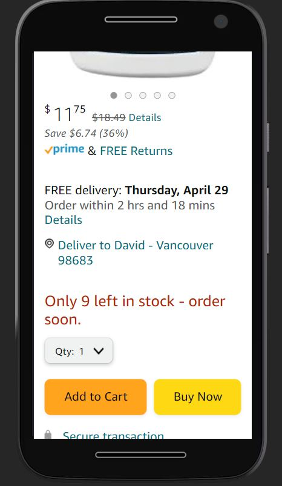

Fitt's Law
Amazon
I like amazons web site. They keep it really simple with the big orange button. By having this as a Dominate feature it makes it too easy to order something.
PARC: Alignment
Church OF Jesus Christ of Latter day Saints
The alignment of the photos and text all in one column makes it easy to read and find what I am looking for. Also having different sections gives me a chance to see additional content.
White Space and Clean Design
Outlook
Mirosoft Outlook landing page has a very clean and simple design. There is lots of white space showing a photo instead of explaining what is happening